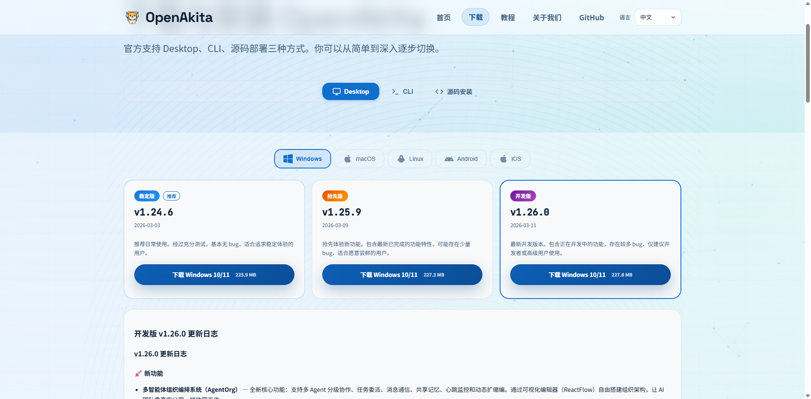

方式一：Windows（Desktop）
图形化配置向导，支持快速配置与完整配置，适合大多数用户。
返回总览：安装教程总览
前置条件
- 官网地址：openakita.ai/download
- LLM API Key：OpenAkita 本身是一个框架，需要连接大模型才能思考。如果没有 API Key，可以前往对应官网注册（如阿里云、DeepSeek、Anthropic 等）
1. 下载安装包
根据你的操作系统下载对应的安装包，教程以 Windows 11、v1.24.16 版本为例。
下载步骤：
- 打开浏览器，访问 OpenAkita 官网下载地址
- 根据你的操作系统下载对应的安装包，点击下载

2. 正式安装
安装步骤：
- 找到刚刚下载的 .exe 文件，双击打开
- 根据安装向导指引，点击「下一步」
- 选择安装路径
- 点击「安装」
- 等待进度条走完（看到一个黑色命令窗口一闪而过，这是正常的）
- 安装结束后，勾选「运行 OpenAkita Desktop」和「创建桌面快捷方式」


3. 配置向导（初次配置）
配置步骤：
- 欢迎使用 OpenAkita 页面，点击「开始配置」
- 确认使用风险，输入"我已知晓"
- 配置 LLM 端点：你至少需要添加 1 个 LLM 端点 才能开始使用。
- 点击 LLM 中的「添加端点」
- 选择服务商，填写 API Key
- 点击「重新拉取」，选择模型
- 点击「添加端点」
- 配置 IM 通道：暂时可不填，直接跳过
- 终端命令与系统设置：根据需求设置，点击「下一步」
- 配置完成，进入 OpenAkita 会自动启动服务
- 切换到聊天页面，即可开始使用
注意：可在配置向导页面选择暂不配置 LLM 和 IM 通道，进入 OpenAkita 后再进行配置。


4. 完整配置
完整配置提供对各功能模块的精细控制，适合需要自定义 LLM 端点、接入 IM 通道、调整 Agent 行为等的用户。
4.1 LLM 端点配置（必填）
LLM 端点是 OpenAkita 调用大语言模型的入口。你可以配置多个端点，系统会根据优先级和可用性自动选择。

添加主端点：点击「+ 添加端点」按钮，打开端点配置对话框

| 字段 | 说明 | 示例 |
|---|---|---|
| 服务商 | 选择 LLM 服务提供商 | 通义千问、OpenAI、Anthropic 等 |
| Base URL | API 接口地址（选择服务商后自动填充） | https://dashscope.aliyuncs.com/compatible-mode/v1 |
| API Key | 你的 API 密钥 | sk-xxxxx |
| 模型 | 选择或输入模型名称（支持在线拉取模型列表） | qwen-max、gpt-4o |
| 端点名称 | 自动生成，也可自定义 | dashscope-qwen-max |
| 能力标签 | 勾选该模型支持的能力 | text、thinking、vision、tools |
高级参数：
| 字段 | 默认值 | 说明 |
|---|---|---|
| API Type | openai | 接口类型，openai 或 anthropic |
| Key 环境变量名 | 自动生成 | API Key 在 .env 中的变量名 |
| 优先级 | 0 | 数值越小优先级越高 |
支持的服务商
国内服务商：
| 服务商 | API 类型 | 默认 Base URL |
|---|---|---|
| 通义千问（DashScope） | openai | https://dashscope.aliyuncs.com/compatible-mode/v1 |
| 智谱 AI | openai | https://open.bigmodel.cn/api/paas/v4 |
| 百度千帆 | openai | https://qianfan.baidubce.com/v2 |
| DeepSeek | openai | https://api.deepseek.com/v1 |
| 月之暗面（Kimi） | openai | https://api.moonshot.cn/v1 |
| 零一万物 | openai | https://api.lingyiwanwu.com/v1 |
| 字节豆包（火山引擎） | openai | https://ark.cn-beijing.volces.com/api/v3 |
| SiliconFlow | openai | https://api.siliconflow.cn/v1 |
国际服务商：
| 服务商 | API 类型 | 默认 Base URL |
|---|---|---|
| OpenAI | openai | https://api.openai.com/v1 |
| Anthropic | anthropic | https://api.anthropic.com |
| Google Gemini | openai | https://generativelanguage.googleapis.com/v1beta/openai |
| Groq | openai | https://api.groq.com/openai/v1 |
| Mistral | openai | https://api.mistral.ai/v1 |
| OpenRouter | openai | https://openrouter.ai/api/v1 |
多端点与 Failover
OpenAkita 支持配置多个端点，提供自动故障转移能力：
- 优先级调度：优先使用 Priority 值最小的端点
- 自动降级：主端点不可用时自动切换到备用端点
- 健康检查：后台定期检测端点可用性
- 冷却机制：连续失败的端点会被临时冷却，避免反复重试
建议：至少配置 2 个端点（不同服务商），以确保高可用性。
编译器端点（可选）
编译器端点用于代码编译、格式化等辅助任务。如果不配置，系统会使用主端点。
语音识别端点（可选）
用于在线语音识别，支持 OpenAI Whisper / DashScope Qwen-ASR / Groq / SiliconFlow 等。
4.2 IM 通道
IM 通道让你可以通过即时通讯工具与 OpenAkita 对话。所有通道均为可选配置。

微信
| 字段 | 说明 |
|---|---|
| 启用 | 引导创建 Bot——选择微信 |
| Token | 扫码创建机器人，可以直接填入 |
飞书
| 字段 | 说明 |
|---|---|
| 启用 | 引导创建 Bot——选择飞书 |
| App ID | 飞书开放平台自建应用的 App ID（扫码创建机器人，可以直接填入） |
| App Secret | 飞书开放平台自建应用的 App Secret（扫码创建机器人，可以直接填入） |
接入方式：自建应用，无需公网 IP。在飞书开放平台创建应用并获取凭证。
钉钉
| 字段 | 说明 |
|---|---|
| 启用 | 引导创建 Bot——选择钉钉 |
| Client ID | 钉钉开放平台企业内部应用的 Client ID |
| Client Secret | 钉钉开放平台企业内部应用的 Client Secret |
接入方式：企业内部应用，无需公网 IP。在钉钉开放平台创建应用。
企业微信
| 字段 | 说明 |
|---|---|
| 启用 | 引导创建 Bot——选择企业微信 |
| Bot ID | 扫码创建机器人，可以直接填入 |
| Secret | 扫码创建机器人，可以直接填入 |
| 字段 | 说明 |
|---|---|
| 启用 | 引导创建 Bot——选择 QQ |
| App ID | 扫码创建机器人，可以直接填入 |
| App Secret | 扫码创建机器人，可以直接填入 |
Telegram
| 字段 | 说明 |
|---|---|
| 启用 | 引导创建 Bot——选择 Telegram |
| Bot Token | 从 @BotFather 获取的 Bot Token |
| 代理 | HTTP 代理地址（国内用户通常需要），如 http://127.0.0.1:7890 |
| 配对验证 | 是否要求用户输入配对码才能使用 |
| 配对码 | 自定义的配对验证码 |
| Webhook URL | 使用 Webhook 模式时填写，留空则使用 Long Polling |
4.3 工具与技能
此步骤配置 OpenAkita 可以使用的工具和技能扩展。

MCP 工具
MCP（Model Context Protocol）允许 OpenAkita 通过标准化协议调用外部工具。
| 配置项 | 默认值 | 说明 |
|---|---|---|
| MCP 总开关 | 开启 | 是否启用 MCP 工具 |
| 超时 | 60 秒 | MCP 工具调用超时时间 |
数据库工具（可选）：
| 配置项 | 说明 |
|---|---|
| MySQL | 启用后配置 Host、User、Password、Database |
| PostgreSQL | 启用后配置连接 URL |
Skills 管理
Skills 是可插拔的技能扩展，包括：
- 系统技能：内置技能（只读）
- 外部技能：用户安装的第三方技能，可单独启用/禁用
桌面自动化
桌面自动化让 OpenAkita 可以操作你的电脑桌面（截图、点击、输入等）。
| 配置项 | 默认值 | 说明 |
|---|---|---|
| 桌面自动化 | 开启 | 总开关 |
| 默认显示器 | 0 | 多显示器时指定主屏幕 |
| 最大宽度 | 1920 | 截图最大宽度 |
| 最大高度 | 1080 | 截图最大高度 |
高级选项：
| 配置项 | 默认值 | 说明 |
|---|---|---|
| 压缩质量 | 85 | 截图 JPEG 质量 |
| 视觉识别 | 开启 | 使用视觉模型辅助桌面操作 |
| 视觉模型 | qwen3-vl-plus | 视觉识别使用的模型 |
| OCR 模型 | qwen-vl-ocr | OCR 使用的模型 |
| 点击延迟 | 0.1 秒 | 每次点击后的等待时间 |
| 输入间隔 | 0.03 秒 | 逐字输入的间隔 |
4.4 灵魂与意志
灵魂（Soul）
人格选择：OpenAkita 内置多种预设角色人格
| 角色 | 风格 | 适用场景 |
|---|---|---|
| 默认助手 | 专业友好、平衡得体 | 日常使用，万能型 |
| 商务顾问 | 正式专业、数据驱动 | 工作场景，正式汇报 |
| 技术专家 | 简洁精准、代码导向 | 编程开发，技术问答 |
| 私人管家 | 周到细致、礼貌正式 | 生活服务，日程安排 |
| 虚拟女友 | 温柔体贴、情感丰富 | 情感陪伴，倾听关怀 |
| 虚拟男友 | 阳光开朗、幽默风趣 | 情感陪伴，轻松有趣 |
| 家人 | 亲切关怀、唠叨温暖 | 家庭场景，长辈式关怀 |
| 贾维斯 | 冷静睿智、英式幽默 | 科技极客，AI 管家 |
| 自定义 | 用户自定义角色 ID | 进阶用户，DIY 人格 |
自我认识：
| 配置项 | 默认值 | 说明 |
|---|---|---|
| Agent 名称 | OpenAkita | Agent 的显示名称 |
| 最大迭代次数 | 300 | 单次任务的最大执行步数 |
| 思考模式 | auto | auto（自动）/ always（总是）/ never（关闭） |
| 自动确认 | false | 是否跳过用户确认直接执行工具 |
记忆管理：
| 配置项 | 默认值 | 说明 |
|---|---|---|
| 记忆管理 | 开启 | Agent 会记住你说过的话和偏好 |
LLM 智能审查：将由大模型逐条审查所有记忆，删除垃圾、合并重复，此操作可能需要较长时间，请耐心等待。
意志（Will）
| 字段 | 默认值 | 说明 |
|---|---|---|
| 主动任务 | 启用 | 让 Agent 像真人一样主动找你聊天 |
| 每日最大消息 | 3 | 每天主动消息数量上限 |
| 最短间隔时间 | 120 | 两条主动消息之间的最短间隔（分钟） |
| 空闲阈值 | 24 | 用户空闲超过此时长后才触发主动消息 |
| 安静开始（时） | 23 | 不发送主动消息的开始时间 |
| 安静结束（时） | 7 | 免打扰时段结束（24h 制） |
| 表情包 | 关闭 | 是否在对话中使用表情包 |
| 表情包目录 | data/sticker | 表情包数据存储路径 |
| 字段 | 默认值 | 说明 |
|---|---|---|
| 计划任务 | 启用 | 定时让 Agent 自动执行指定任务 |
| 时区 | Asia/Shanghai | 计划任务使用的时区 |
4.5 高级配置

桌面通知配置：
| 配置项 | 默认值 | 说明 |
|---|---|---|
| 任务完成通知 | OFF | 任务完成时弹出系统桌面通知提醒 |
| 通知提示音 | OFF | 桌面通知时播放系统提示音 |
会话配置：
| 配置项 | 默认值 | 说明 |
|---|---|---|
| 会话超时 | 30 分钟 | 无活动后自动结束会话 |
| 最大历史 | 50 条 | 单个会话保留的消息数 |
| 存储路径 | data/sessions | 会话数据存储目录 |
日志配置：
| 配置项 | 默认值 | 说明 |
|---|---|---|
| 日志级别 | DEBUG | DEBUG / INFO / WARNING / ERROR |
| 日志目录 | logs | 日志文件存储目录 |
| 数据库路径 | data/agent.db | SQLite 数据库路径 |
| 单文件大小 | 10 MB | 日志文件最大体积 |
| 备份数量 | 30 | 保留的日志备份数 |
| 保留天数 | 30 | 日志保留天数 |
| 控制台输出 | 关闭 | 是否输出日志到控制台 |
| 文件输出 | 关闭 | 是否写入日志文件 |
网络与安全：
| 配置项 | 默认值 | 说明 |
|---|---|---|
| 允许外部访问（局域网/公网） | 关闭 | 开启后监听 0.0.0.0，允许其他设备通过 IP 访问 Web 端 |
| 反向代理模式（Nginx/Caddy） | 关闭 | 通过反向代理部署时必须开启，开启后读取 X-Forwarded-For 获取真实 IP |
平台与云服务：
| 配置项 | 默认值 | 说明 |
|---|---|---|
| 平台连接（Agent Hub / Skill Store） | https://openakita.ai/api | 配置 OpenAkita 远程平台地址 |
数据与备份：
| 配置项 | 默认值 | 说明 |
|---|---|---|
| 定时备份 | 关闭 | 配置自动备份的路径、频率和备份内容 |
| 备份存储位置 | / | 配置备份存储的路径 |
| 保留最近备份数 | 5 | 配置保留最近的备份数量 |
| 包含用户数据（对话记忆、会话等） | 开启 | 是否开启用户数据的备份 |
| 包含媒体文件（图片、语音等） | 关闭 | 是否开启媒体文件的备份 |
- 手动备份与还原：可以立即创建备份或者从已有备份还原工作区数据
- 工作区迁移：将
.openakita数据目录迁移到其他位置
4.6 多 Agent 模式
| 配置项 | 默认值 | 说明 |
|---|---|---|
| 多 Agent 模式 | 关闭 | 多 Agent 协作模式 |
4.7 完成
配置完成后，点击「应用并重启」，即可启动服务。
所有配置项均通过工作区的 .env 文件管理，路径：~/.openakita/workspaces/{workspace_id}/.env